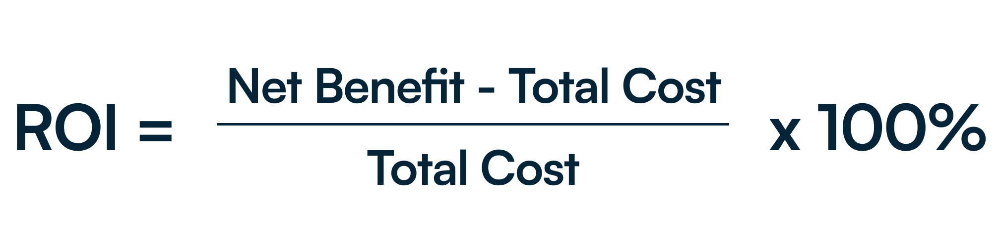

Why ROI Matters in Graduate Development
Whether you’re in a position of business management, an HR director, or otherwise involved in leadership & development, you’re likely keen on seeing what Kubicle’s graduate program ROI is and how it pays off in terms of productivity. The ROI of these programs is certainly an important metric, given the cumulative ramp-up costs, e.g. salaries, supervisor time, and lost productivity. Moreover, poor onboarding can lead to high attrition in employee retention and wasted resources.
Kubicle ramps up time-to-project by 35% and helps organisations save measurable costs within a smaller timeframe than many other competitors. Our tailored modules and skills assessment mean that no graduate is wasting time on course modules they don’t need and are instead getting practical, hands-on training with only the relevant modules.
Traditional Ways to Measure Training ROI (and Limitations)
HR departments and others within organisations commonly measure the costs and benefits of training programs, quite often their own internal training. There are two key components to measuring the return on investment (ROI) for company training: benefits (what the organisation reaps from the program) and costs (what the organisation spends, directly and indirectly).
The formula for training ROI is as follows:

To measure costs, consider the cost of retaining in-house or outsourced training staff, facilitators, and any other administrative costs, direct or indirect, that contribute to the total cost of training.
To measure benefits, it’s a little more challenging. Productivity benchmarking, additional revenue generated from project completion, or the opportunity cost of not having to hire new employees due to attrition - these could all be measured and assigned a monetary value.
While the calculation may appear simple, the components that contribute to ROI have many dynamics that may be challenging to measure. Moreover, generic training does not address the value that graduate programs can bring. That’s why we built a calculator specifically designed for graduate onboarding to help organisations see just how valuable Kubicle is.
Introducing the Graduate Ramp-Up Calculator
If you’re looking how to measure return on investment of training programs for graduates within your organisation, Kubicle’s calculator tool can help. When looking into how to measure ROI of training programs such as our workplace readiness ramp-up and graduate programs (e.g. Graduate Onboarding & Work Readiness), our tool will help give you a realistic estimate of your potential savings.
To use the calculator, you’ll need to estimate the total number of graduates, their salaries, and the number of ramp-up months. The outputs will show you the total annual ramp-up cost, as well as the amount of savings that organisations can yield with Kubicle.
For example, with 50 graduates on a €40,000 p.a. salary, it is expected that the company will see €294,000 in annual savings. Try it out for yourself today.
Practical Example: ROI in Action
Imagine a Graduate Program with 30 graduates, each earning $60,000 per year, and a 4-month ramp-up period. Without Kubicle, the total cost of graduate ramp-up, including supervisor time, reaches $740,000 annually. With Kubicle’s 35% efficiency gain, this drops to $481,000, delivering an estimated $259,000 in annual savings while freeing supervisors to focus on higher-value work.
Beyond the Calculator: Strategic Benefits
Finances and budgets are, of course, quite important to business management and HR directors. The benefits of graduate development and other workplace readiness programs from Kubicle go beyond just financial.
Organisations can expect much higher employee retention, as graduates confidently develop skills that will be put to use upon transitioning to project work. Employers can also expect faster integration with teams, better team cohesion, and empowering individual employees to feel valued. Naturally, positive outcomes look fantastic for employer branding, and our courses provide internationally recognised credentials and LinkedIn credentials.
Use Our Free, Ready-to-Use Calculator Today
Kubicle understands that employers rightfully want meaningful and measurable results from training programs. You wouldn’t leave financial statements to a guess, so why leave such a large investment to chance like graduate development and training programs? It’s no longer optional to measure the ROI of graduate development - it’s essential to prove business value.
Use our free calculator today to see just how much your organisation can save. Request a free demo from Kubicle to see how our training programs deliver value.